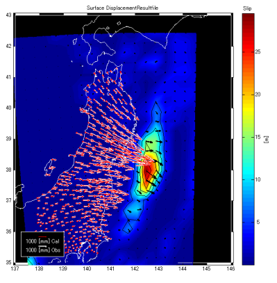
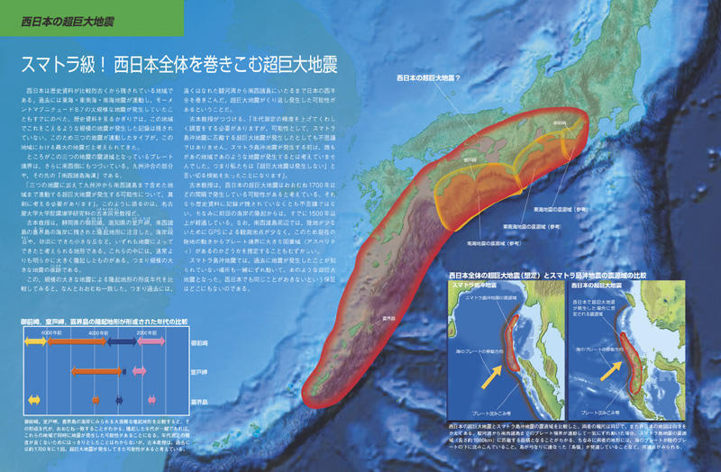
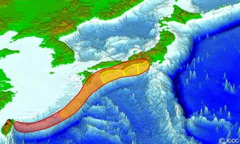
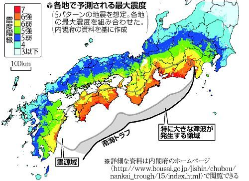
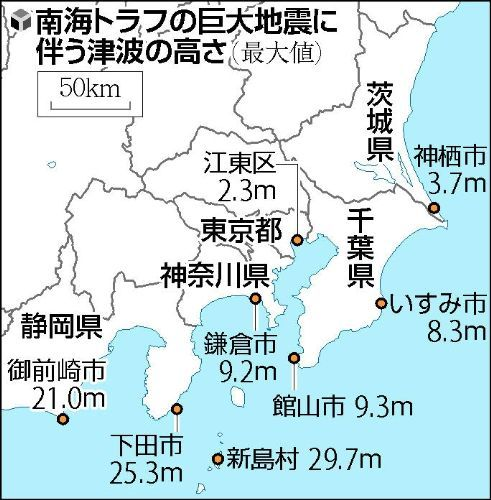
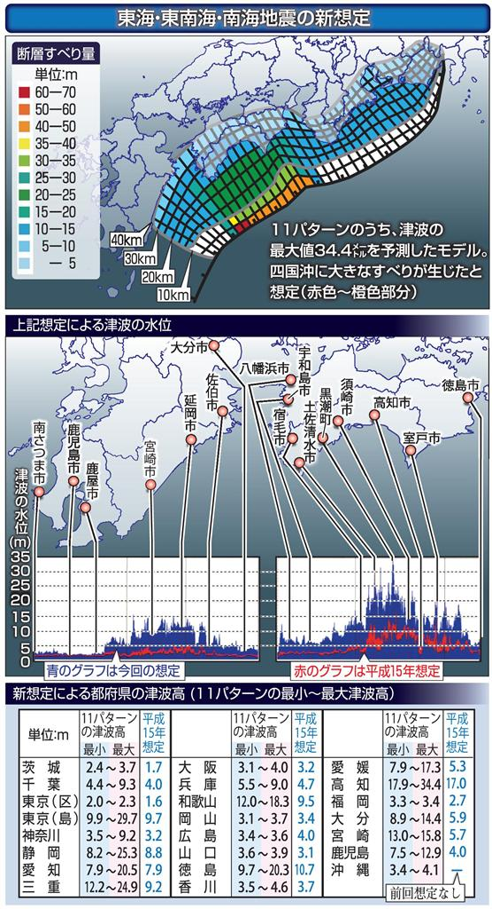
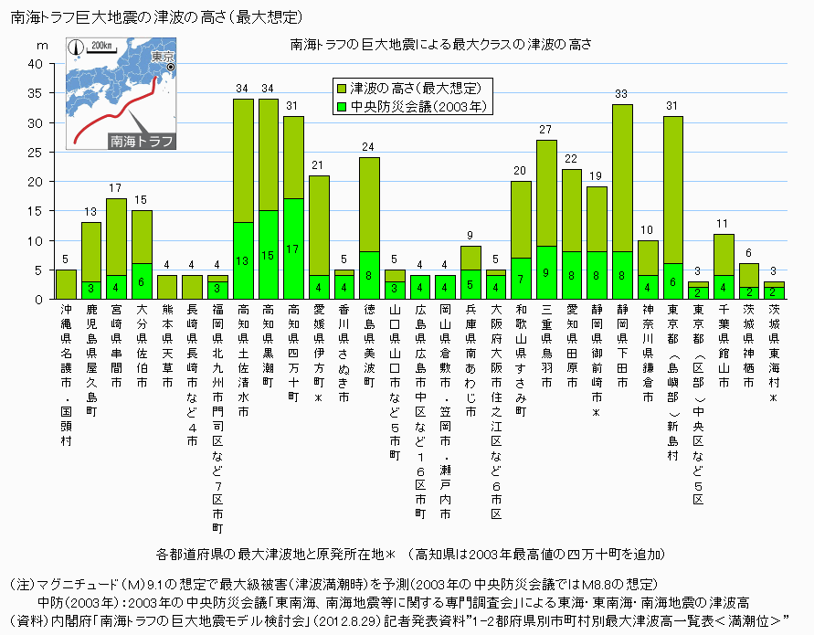

「動く可能性があるプレート境界」
●【動く可能性があるプレート境界】
動く可能性があるプレート境界は下記『動く可能性があるプレート境界』図の「黄緑の線（相模トラフ、日本海溝）、緑の線（千島海溝）、水色の線（駿河トラフ、南海トラフ）、青の線（琉球海溝）」のプレート境界に接する（丸で囲まれた）震源域、「黄色（「糸魚川（いといがわ）−静岡」構造線）」の線の周辺の震源域、。
プレートが沈み込んでいる場合、震源域は その沈み込んでいるプレート境界面となる、つまり「黄緑の線（相模トラフ、日本海溝）」の震源域は丸で囲まれた「関東、房総沖」、「緑の線（千島海溝）」の震源域は丸で囲まれた「十勝沖、根室沖」、「水色の線（駿河トラフ、南海トラフ）」の震源域は丸で囲まれた「東海、東南海、南海」などと想定される、「青の線（琉球海溝）」に関しては下記『スマトラ級「"超"東海地震と連動の琉球海溝地震」もあり？』参照。
『動く可能性があるプレート境界』図

2011年11月18日『向こう１カ月、Ｍ７超の余震確率は１５％ 東日本大震災』
 http://www.asahi.com/science/update/1118/TKY201111180594.html
http://www.asahi.com/science/update/1118/TKY201111180594.html
> 東日本大震災の震源域やその周辺で、１カ月間にＭ７以上の余震が発生する確率は１５％との見通しを１８日、地震予知連絡会で気象庁が発表した。余震の数は減ってきているが、大地震が発生する確率は、震災前に比べて７倍程度高く、注意が必要と呼びかけている。Ｍ７は震源の近くだと震度６弱以上になる可能性もある地震規模。１５日〜１２月１４日の１カ月間の発生確率を計算した。
↑『向こう１カ月、Ｍ７超の余震確率は１５％ 東日本大震災』の余震確率１５％は低いように感じるかもしれませんが、気象庁は恐らくスマトラ島沖の（2004年12月26）超巨大地震(M9.1〜9.3)の「約3ヵ月後」に発生した（2005年3月28日）（メダン南西沖）ニアス地震(M8.6〜8.7)に対応する地震を想定していると思われ、（3.11 を起点として経過した期間を考えれば）当然 かなりヤバイ状態なんじゃないかと言う気はします（その後、数年に渡り なんども発生しているので、（気象庁は）当然 そのような事態を想定していると思われます）。
この「東日本大震災の震源域」は上記『動く可能性があるプレート境界』図の赤く塗られた分部、「その周辺」が「黄緑の線（相模トラフ、日本海溝）、緑の線（千島海溝）」のプレート境界に接する（丸で囲まれた）震源域。
（震源域はプレートが沈み込んでいるプレート境界面となるので）黄緑の線の震源域は丸で囲まれた「関東、房総沖」、緑の線の震源域は丸で囲まれた「十勝沖、根室沖」と想定される。
神戸大学名誉教授 石橋克彦のアムール・プレート東進説によれば、「3.11 東日本・大震災」による東日本の東方向への移動（下記『3.11 東日本・大震災」による東日本の東方向への移動』図 参照）は、『南海トラフ、「糸魚川（いといがわ）−静岡」構造線』の ひずみ応力も増加したと推定している。
『3.11 東日本・大震災」による東日本の東方向への移動』図

なお、プレート境界ではないが上記「（東日本大震災の震源域の）その周辺」には「アウターライズ地震」も想定されていると思われる。
（参照）
「伊豆・マリアナ、房総、東北アウターライズ」震源域
『スマトラ級「"超"東海地震と連動の琉球海溝地震」もあり？』
> 東京大学地震研究所地震火山災害部門の都司嘉宣准教授によると、津波の復元から887年の仁和地震（東海・東南海・南海連動型）をスマトラ沖地震（2004年）と同様の M9クラスの超巨大地震と推定している。また、歴史文献などの記録がない琉球海溝のプレート境界で発生する推定M9クラスの超巨大地震が、数千年に一度発生する可能性が、2006年に琉球大学と名古屋大学の研究者から示唆されている2007年から2009年にかけて琉球大学、名古屋大学、台湾中央研究院らの合同による海底地殻変動観測が行われ、その成果によれば、測定用の海底局が沖縄本島から北西方向へ年間7cm移動していることから、推測される固着域（アスペリティ）は幅約30-50kmでプレート間カップリング領域が形成されていることが判明した。名古屋大学大学院環境学研究科の古本宗充教授の論文によると、東海・東南海・南海の南海トラフから奄美群島沖の南西諸島海溝までの全長約 1000 km の断層が連動して破壊されることで、2004年のスマトラ島沖地震に匹敵するM9クラスの超巨大地震が発生する可能性がある。これは、御前崎（静岡県）、室戸岬（高知県）、喜界島（鹿児島県）の3つの海岸にある南海地震のものと推定されるものより大きな平均1700年（直近は約1700年前）の4隆起がある隆起地形が根拠になっている（下記『「東海地震と連動の琉球海溝」震源域』図 参照）。
↑もし、「駿河トラフ、南海トラフ」と「琉球海溝」が連動した場合は中央構造線も動く（「隆起 または 沈降」する）のではないかと懸念されている。
中央構造線が動くと言うことは（プレート境界型に匹敵する）（中央構造線による）超巨大・直下型地震の可能性がある。
『「東海地震と連動の琉球海溝」震源域』図

『「東海地震と連動の琉球海溝」震源域』図

『「東海地震と連動の琉球海溝」震源域』図

〜〜〜〜〜〜〜〜〜〜〜〜〜〜〜〜〜〜〜〜〜〜〜〜〜〜〜〜〜〜
【参考】
『「首都圏」地震災害』
2012年02月『これは何の予兆なのか 琵琶湖・富士山・桜島に不気味な異変が起きている』
http://gendai.ismedia.jp/articles/-/31725
http://gendai.ismedia.jp/articles/-/31725?page=2
http://gendai.ismedia.jp/articles/-/31725?page=3
http://gendai.ismedia.jp/articles/-/31725?page=4
（参考）
『富士山が活動期に？』
2011年05月『房総半島で方位磁石の南北が逆転する怪奇現象“磁気異常”が多発』
http://wpb.shueisha.co.jp/2011/05/26/4835/
2011年08月『富士山、駿河湾周辺で“磁気異常”が発生。東海地震の前兆か？』
http://wpb.shueisha.co.jp/2011/08/24/6437/
2012年8月『南海トラフ地震、死者３２万人全壊２３８万棟か』
http://www.yomiuri.co.jp/science/news/20120829-OYT1T01028.htm
（動画）『駿河湾から紀伊半島沖で津波が発生のケース』
http://www.yomiuri.co.jp/stream/m_news/vn120829_3.htm
2012年02月『南海トラフ巨大地震の新想定 高い津波、強い揺れ拡大』
http://sankei.jp.msn.com/science/news/120202/scn12020208090001-n1.htm
http://sankei.jp.msn.com/science/news/120202/scn12020208090001-n2.htm
2012年3月『南海トラフ地震予測、１０県で震度７ 津波最大３４ｍ』
http://www.asahi.com/national/update/0331/TKY201203310376.html
2012年4月『南海トラフの巨大地震、最大津波３４ｍを予測』
http://www.yomiuri.co.jp/feature/earthquake/news/20120401-OYT8T00342.htm


2012年05月『衝撃的「高さ３４メートル」の津波想定をどう受け止めるか』
http://sankei.jp.msn.com/west/west_life/news/120512/wlf12051218000025-n1.htm
http://sankei.jp.msn.com/west/west_life/news/120512/wlf12051218000025-n2.htm
http://sankei.jp.msn.com/west/west_life/news/120512/wlf12051218000025-n3.htm
http://sankei.jp.msn.com/west/west_life/news/120512/wlf12051218000025-n4.htm
http://sankei.jp.msn.com/west/west_life/news/120512/wlf12051218000025-n5.htm

『図録南海トラフ巨大地震の津波の高さ（最大想定）』
http://www2.ttcn.ne.jp/honkawa/4382.html
